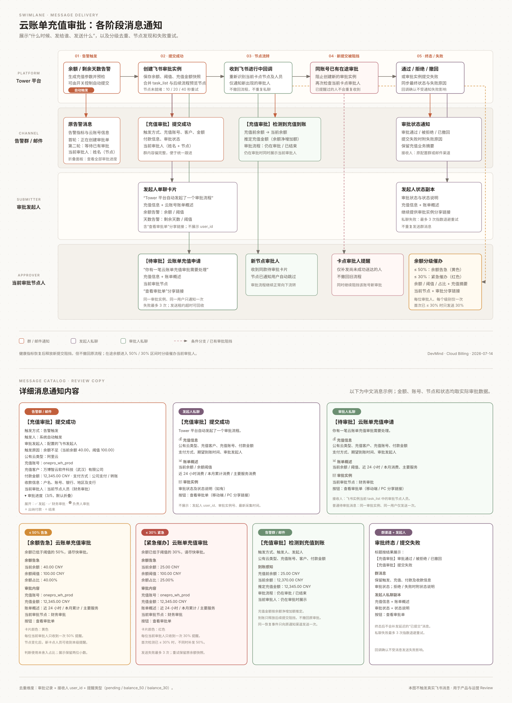

群消息：统一跟进
告警群保留完整充值业务信息。提交成功时增加当前审批人及节点， 第二轮告警会直接展示已有审批流程的当前卡点人员，并可通过 折叠面板查看已完成、当前和后续审批节点， 余额恢复时通知推定充值金额和审批是否仍在进行；终态或失败时 同步审批结果，方便运营统一追踪。
SWIMLANE DIAGRAM · RELEASE SUMMARY
本图按 Tower 平台、告警群/邮件、审批发起人、当前审批节点人四条泳道， 展示告警触发到审批终态之间的消息接收人、内容差异、余额分级催办 和可靠性策略。

告警群保留完整充值业务信息。提交成功时增加当前审批人及节点， 第二轮告警会直接展示已有审批流程的当前卡点人员，并可通过 折叠面板查看已完成、当前和后续审批节点， 余额恢复时通知推定充值金额和审批是否仍在进行；终态或失败时 同步审批结果，方便运营统一追踪。
通过配置的 user_id 单聊发起人，说明由 Tower 自动发起，提供充值摘要、 账单概述和审批分享链接；隐藏 user_id、实例号和采集时间等内部信息。
根据飞书实例当前 task_list 识别卡点人员，发送待审批卡片。 余额降至阈值的 50% 和 30% 时分别发送告急、紧急催办；每位审批人 每个级别只收到一次，并支持发现重试、发送重试和租约回收。